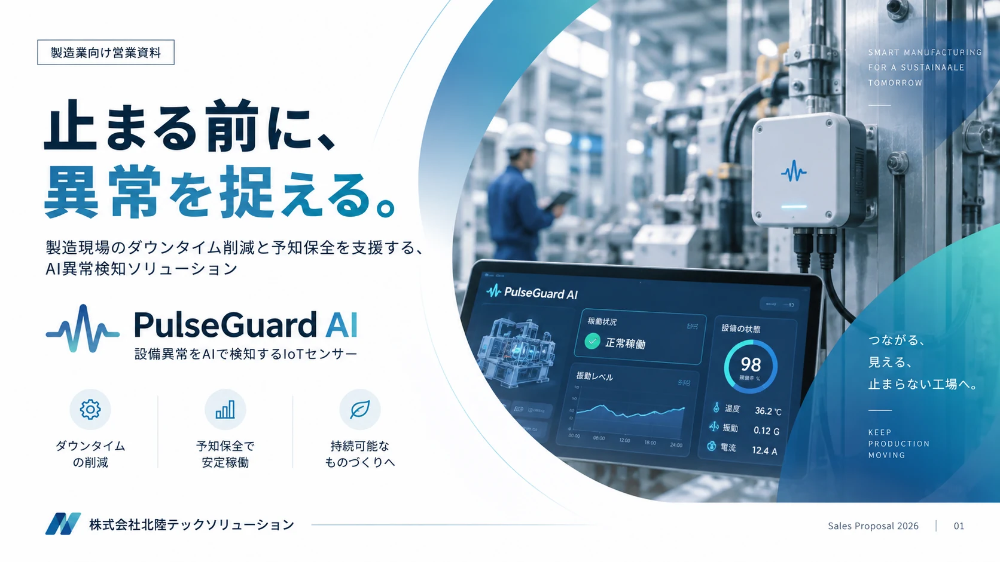
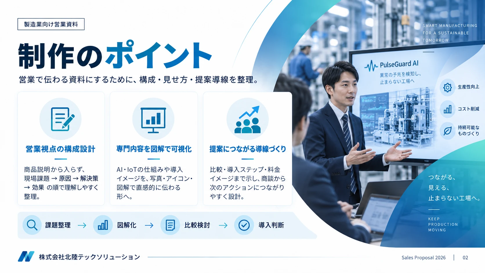

CASE STUDY 01 / SALES DECK
製造業向け
AI予知保全ソリューション
商品説明から始めず、現場の課題を起点に。
営業先が「自分ごと化 → 理解 → 比較 → 導入判断」できる順番へ再構成した10ページの営業資料です。


FULL DECK
Sales Deck / 10 Slides
画像をクリックすると拡大表示できます。
CASE STUDY 01 / SALES DECK
商品説明から始めず、現場の課題を起点に。
営業先が「自分ごと化 → 理解 → 比較 → 導入判断」できる順番へ再構成した10ページの営業資料です。


FULL DECK
画像をクリックすると拡大表示できます。